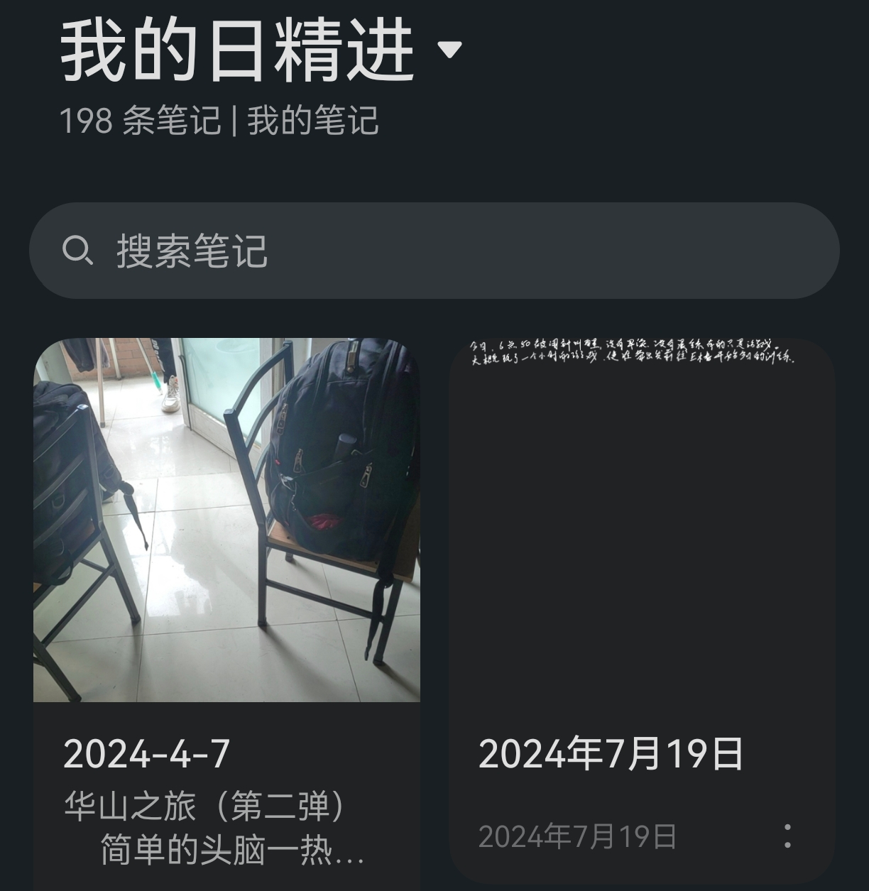

新生研讨分享–安排学习生活
学习方面
- 课堂上，认真听讲，记笔记
- 大部分老师会指出重点内容
- 对比记笔记和不记笔记，前者课后没有印象，后者留有印象
- 用于期末复习，不用把老师的所有 PPT、课本从头到尾看一遍，主看笔记，辅看 PPT、课本
- 对比高中和大学 前者是高度结构化、被动接受 后者是高度自由化、主动探索

图 1 记了很多笔记
-
作业认真独立完成，弄懂（本专业经验来看，考试题目与课后作业比较类似）
-
对于所谓的水课，感兴趣的好好听，不感兴趣的选择性听，报告好好写（按照模板）
生活方面
- 写日记（每天花费十几分钟简单记录以下今日生活及明日计划）

图 2 2023 年末至 2024 年初日记
其他
- 完成必做事项后，还有多余的时间，可以找找自己感兴趣的事情，尝试不同的东西
- 写网站、博客
- 学习单片机控制
- 写软件
- 国内外有很多资源可以学习
- 参加竞赛
- 跑步、锻炼
- 出去玩
- 阅读
- ……
- 大胆探索、大胆尝试
- 遇到难题，怎么解决
- 问熟悉这方面的人是最快的
- 然后是视频、文字教程等
- 实践探索（可能会走很多弯路）
- 拒绝内耗
- 多与家人、朋友交流分享，分享困惑与快乐
- 相信只要有需求，就能找到解决方法
- 可以使用工具完成的事情，不要亲力亲为
- 举例：写文档编辑公式 使用自动识别软件simpletex 直接复制粘贴到mathtype或AxMath
- 可以使用工具完成的事情，不要亲力亲为

- 流程化是提高工作效率的指导原则
- 能自动化的工作不手动完成